제2장 「선주 나부」 1막
별뗏목의 바다 · 구름나루 · 사진궁 · 장낙천 · 회성항 · 태복사 · 공조사
원치 않은 초청
은하열차 · 구름나루 · 사진궁벨로보그를 떠난 열차에 걸려 온 통신 한 통이 다음 역을 바꾼다.
「하늘 여정, 원치 않은 초청」
한 표
은하열차 관람 칸
벨로보그를 떠난 열차에서 승객들이 다음 행선지를 정한다. 무명객의 길은 무명객이 직접 선택한다는 아키비리의 전통에 따라, 정거장에 모인 승객이 한 표씩 던진다.
용감하고 거침없는 개척자, 선량하고 착한 무명객은 그런 미래를 못 본 척할 수 없겠지?
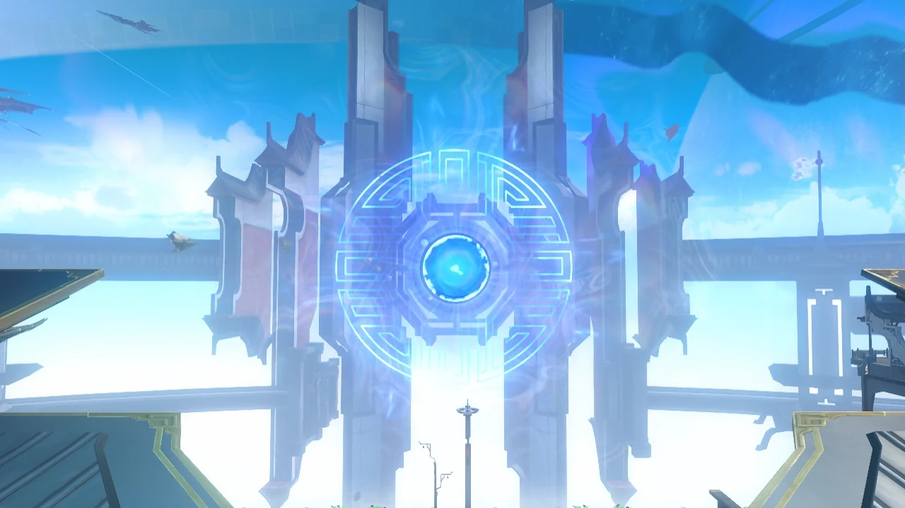
투표가 끝나기 전에 의 통신이 걸려 온다. 그녀는 선주 「」에서 스텔라론 사고가 벌어지고 있다고 알리고, 열차를 그곳으로 초대한다. 거절하기 어려운 초대지만 의도는 읽히지 않는다.
은 이번 여정에 타지 않겠다고 한다. 카프카의 통신 영상에 비친 인물 하나가 그 이유이고, 그는 열차에 남는다. 와 , 셋이 나부로 향한다.
투표는 만장일치가 아니다. Mar. 7th는 선주로 가는 것에 반대하고, 단항은 표를 주지 않은 채 열차에 남는다. 결정은 남은 승객의 몫으로 넘어간다.
「구름에 가려진 길, 마각에 빠진 몸」
빈 항구
구름나루 · 별뗏목의 바다 · 사진궁
의 항구는 비어 있다. 열차를 맞을 사람도, 안내판을 켜 둔 사람도 없다. 곧 마각의 몸이 항구를 휩쓸고, 그 소동 속에서 여우족 소녀 이 위기에 몰린다.
여긴 여행객을 위한 길이 아니라 하역용 부두라고! 대체 누가 안내한 거야?
정운은 의 사절이다. 그녀는 일행을 별뗏목에 태워 「」 심장부로 데려가고, 사진궁에서 조타수 을 만나게 한다. 어공은 스텔라론 사고가 선주 내부의 일이라며 외부인의 개입을 거절한다.
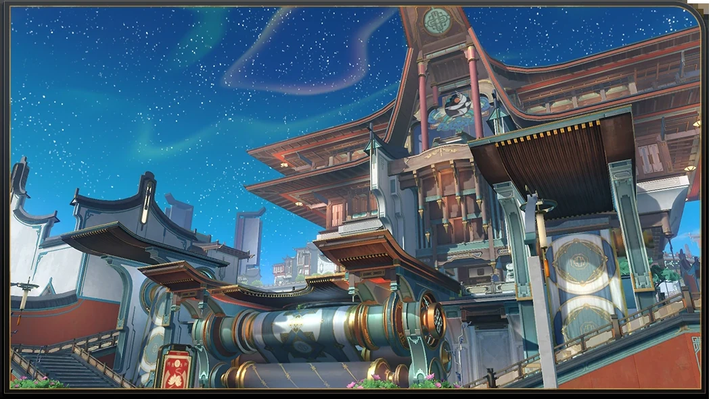
판을 바꾸는 것은 장군 이다. 그는 일행의 편을 들어 편의를 제공하는 대신, 스텔라론 수색이 아니라 행방이 묻힌 를 쫓는 일을 맡긴다. 일행은 정운의 안내로 세신 객잔에 자리를 잡는다.
마각의 몸은 사람의 몸을 비틀어 만든 존재이고, 구름나루에서 그것이 날뛰는 것은 재앙이 이미 항구까지 왔다는 뜻이다. 정운은 그 사실을 사절의 말투로 감춘다.
단항, 홀로
나부 동천 · 시왕사열차에 남은 승객이 금지령을 깨고 배에 오른다.
「아른거리는 과거, 흩어진 기억」
금지령
나부 · 구름나루
은 의 통신 영상에서 를 확인한다. 그와의 원한은 이번 초대에 딸린 위험이고, 로 가는 일은 금지령을 깨는 일이기도 하다. 그는 그 위험을 감수하기로 한다.
그래도 전… 그들을 내버려 둘 순 없어요. 전 그저… 제가 감당해야 할 책임이 결국 절 쫓아와, 모두를 끌어들일까 봐 걱정이에요……
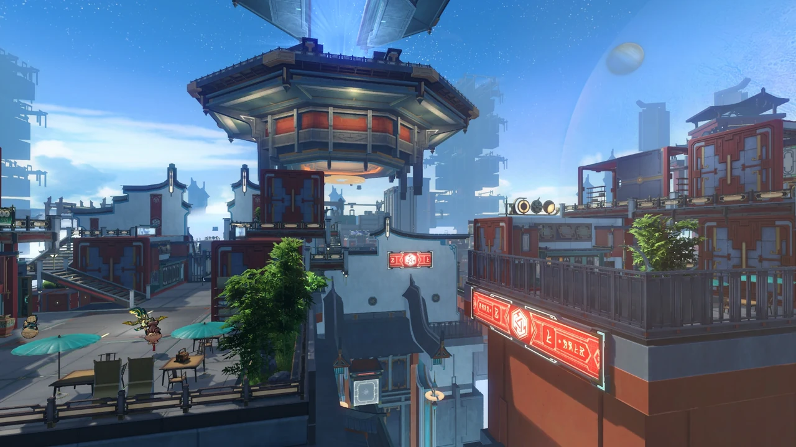
나부에 내린 단항은 과 을 만난다. 소상은 에 지원하려는 젊은 검객이고, 나찰은 상자를 든 여행자다. 세 사람은 별뗏목을 타고 사람이 없는 동천으로 향한다.
동천에서 마각의 몸에 시달리는 소녀를 구한다. 소녀는 자신을 의 판관 라고 밝히고, 나부에서 설명되지 않는 변화가 진행 중이라고 말한다. 단항은 그 변화를 자신의 과거와 겹쳐 본다.
소상은 운기군 지원 절차를 아직 밟지 않았고, 나찰은 그런 소상의 배에 얻어 탄다. 세 사람의 관계는 이 여정이 끝난 뒤에도 정리되지 않는다.
「혼란 속 천하, 그릇된 길」
설의
나부 동천
를 구한 뒤 세 사람은 동천을 빠져나온다. 설의가 전하는 것은 마각의 몸이 늘어난 이유도, 거목이 다시 살아난 이유도 아닌 그 사이의 징후들이다. 재앙은 이미 시작되었고 목격자마다 다른 것을 본다.
「시왕사」의 율법에 따라 판관인 난 다른 사람들과 엮여선 안 돼. 하지만 너희는 날 도와줬으니 충고 하나만 하지. 얼른 이곳을 떠나
은 이 동선을 열차 팀과 공유하지 않는다. 자신의 과거가 의 사건과 얽혀 있다는 것을 알면서도, 그는 추적자와 증인의 사이에서 자기 몫을 정하지 못한다.
나부의 혼란은 이때부터 여러 갈래로 갈라진다. 는 계산을, 은 방어를, 는 항로를, 는 죽은 자의 기록을 맡고, 각 부서가 서로 다른 결론을 향해 움직인다.
설의가 본 것은 도시가 아니라 동천의 변화다. 나무뿌리와 마각의 몸이 함께 늘어난 자리에는 늘 같은 냄새가 남는다.
경청이 쫓는 여우
장낙천 · 회성항 · 태복사기계견 하나가 사냥감의 흔적을 따라가고, 궁관진이 그 사냥감의 과거를 연다.
「여우를 추격하는 경청」
기계견
장낙천 · 회성항
가 통신을 감청해 의 행방에 대한 단서를 잡는다. 추적의 효율을 높이기 위해 이 공조사에서 만든 기계견 「경청」을 꺼내고, 일행은 그 뒤를 따라 장낙천과 회성항을 오간다.
그러니까 우린 도와줄 사람도 없고 지원도 없는데, 괴물을 상대하며 컴퍼니에서 천문학적인 현상금을 건 스텔라론 헌터를 잡아야 한다는 거네…. 그래, 뭐 처음도 아닌걸
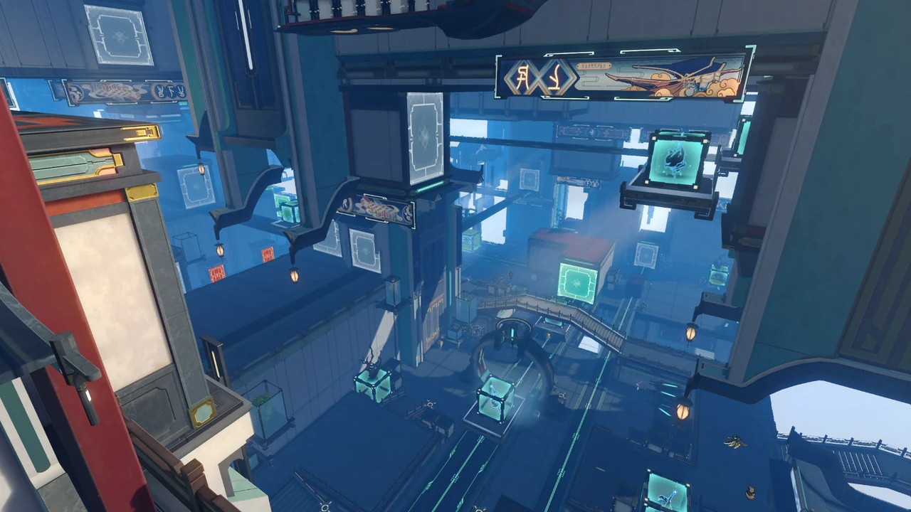
경청은 냄새가 아니라 흔적으로 쫓는다. 노점의 물건, 행인의 시선, 버려진 물건에 남은 자취가 사슬처럼 이어지고, 일행은 사냥감이 일부러 흘린 단서인지 판단하지 못한 채 계속 나아간다.
추적의 끝에서 카프카는 도망치지 않는다. 그녀는 오래 기다렸다는 듯 일행을 맞고, 곧 태복 이 나타나 의 명령이라며 그녀를 데려간다. 사냥은 심문으로 넘어간다.
경청은 정운이 공조사에서 빌려 온 도구이고, 그녀가 다룰 수 있는 시간은 짧다. 추적이 길어질수록 기계견의 신뢰도 함께 떨어진다.
「별의 선회, 미래 예견」
사자
장낙천 · 태복사
은 를 에 두고 일행에게 기다리라고 한다. 기다림이 길어지자 일행은 문자에 찍힌 사진을 참고해 태복사의 사자를 찾아 나서고, 장낙천에서 과 합류한다.
하지만 스텔라론 헌터가 그렇게까지 해서 우릴 이곳에 데려온 이유가 뭘까? 이 행동들 배후에 있는 「운명의 노예」는 대체 어떤 미래를 본 거지?
청작은 태복사에서 가장 게으른 관료로 소문난 인물이지만, 부현이 그를 사자로 고른 이유는 따로 있다. 그가 궁관진의 법진을 다루는 몇 안 되는 사람이고, 법진이 멈추면 다시 돌릴 수 있는 사람이기 때문이다.
태복사는 계산과 정보를 맡는 부서다. 비각과 현포가 늘어선 이곳에서 점술가들은 답을 내지 못하고, 스텔라론이 가져온 변수는 이미 그들의 계산 범위를 넘어섰다는 판단만 남는다.
태복사의 문은 외부인에게 닫혀 있고, 내부인인 청작조차 문전 박대를 받는다. 그 침묵이 재앙의 크기를 알리는 첫 신호다.
「궁극의 탐구, 역사의 장관」
궁관진
태복사
궁관진은 과거를 통해 미래를 보고 진실을 연산하는 법진이다. 세 기반이 돌기 시작하면 의 과거가 펼쳐지고, 그 안에 그녀가 이 배에 온 이유가 놓여 있다.
흠, 그럼 인사치레는 이쯤 하죠. 태복사의 인력이 부족한 상황이라 여러분이 궁관진의 기반을 재가동 해줬으면 해요…. 겸사겸사 스텔라론 악령도 제거해주시고요
이 얻은 결론은 믿기 어려운 것이다. 와 의 재난은 같은 원인이 아니고, 그들은 선주를 구하기 위해 왔다. 재앙을 키우는 자들이 재앙을 막으러 온 셈이다.
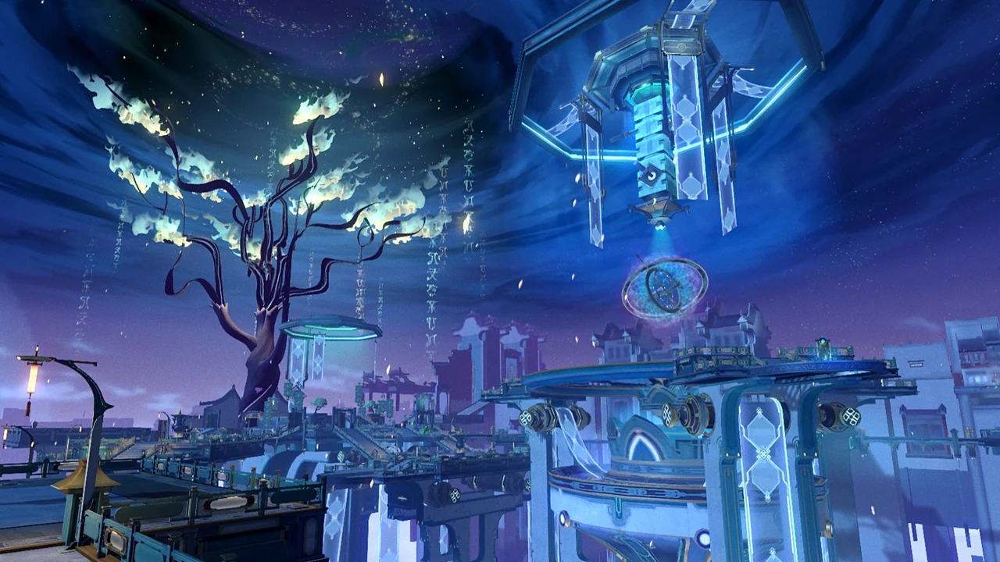
약속에 따라 카프카는 에게 넘겨진다. 그녀는 많은 의문에 답할 수 있는 자리에 있고, 그 대화에서 스텔라론 헌터가 겨누는 대상이 세계가 아니라 라는 사실이 나온다.
궁관진의 세 기반이 도는 동안 는 외부와 통신을 끊는다. 연산의 결과가 새어 나가지 않게 하는 절차이고, 그 절차가 카프카의 심문을 가능하게 한다.
불멸의 거목
태복사 · 공조사에이언즈를 죽이려는 자들의 초대, 그리고 다시 살아난 나무.
「움트는 신목, 기울어진 운명」
에이언즈를 겨눈 칼
태복사
와의 대화에서 의 목적이 드러난다. 그들은 를 죽이려 하고, 그 계획의 일부로 각 세계에 스텔라론을 심는다. 먼지에 가까운 인간이 천체를 해칠 수 있는지에 대한 답은 그녀도 주지 않는다.
올바른 길을 걷는 이들은 평생 너한테 들려주지 않을 이야기들이야
그 사이 의 동천 깊은 곳에서 이 다시 살아난다. 수천 년 동안 말라 있던 나무가 천장을 뚫고 자라나고, 그 소생은 스텔라론의 위치를 알려 주는 표지가 된다.
은 을 이끌고 거목 인근의 단정사 동천을 감시한다. 은 일행에게 소식이 끊긴 공조사의 경위를 조사하라고 하고, 일행은 지름길로 단정사를 향한다.
카프카는 자신의 목적을 숨기지 않지만 계획의 순서는 말하지 않는다. 그녀가 남긴 것은 결론이 아니라 방향이다.
첫째, 개념이 겹치는 운명의 길은 서로 충돌이 발생한다. 넓은 운명의 길은 상대적으로 좁은 운명의 길을 집어삼키게 돼…. 「질서」의 에나는 그렇게 「화합」의 시페에게 동화됐어
「사슴의 울음, 뿔의 얽힘」
공조사
공조사
공조사는 발명과 제조를 맡는 부서다. 입구는 사람들로 붐비고, 안쪽은 거목의 뿌리가 용처럼 뻗어 시설을 삼킨 상태다. 거대한 화로가 뿌리에 묶여 들어올려졌고, 그곳으로 가는 다리는 무너졌다.
그걸 알고 역병 재앙신의 「선물」을 거절한 자도 있었겠지. 하지만 한 문명 전체가 불로장생의 유혹을 거절할 수 있겠나?
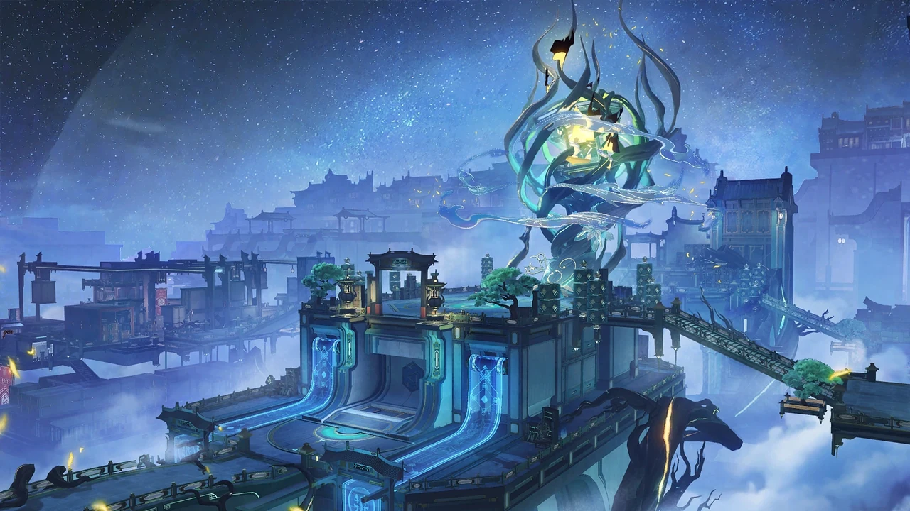
뿌리가 만든 요수 이 안쪽을 지킨다. 사슴의 형상을 한 이 요수는 거목의 힘을 그대로 쓰고, 공조사의 기술자들은 아직 그 안에 갇혀 있다.
일행이 현록을 쓰러뜨리고 공조사를 되찾으면서 거목 소생의 배후가 스텔라론으로 좁혀진다. 의 재난은 자연 발생이 아니라 누군가 심은 씨앗의 결과라는 것이 이 지점에서 확정된다.
공조사의 기술자들은 뿌리에 갇힌 채 설비를 지킨다. 그들을 꺼내는 일과 거목의 뿌리를 끊는 일이 같은 작업이 된다.
제2장 「선주 나부」 2막
단정사 · 연단로 · 인연경 · 고해 · 거목 현근
연단로
단정사불로의 연단을 만드는 부서와, 그 연단에 중독된 배.
「연단로와 거목, 절망의 나락」
독안개
단정사
단정사는 불로의 연단을 만드는 부서다. 거목이 살아나면서 연단로에서 독안개가 새어 나오고, 장수종에게는 치명적이지 않지만 단명종에게는 목숨을 앗는 공기가 된다.
저들은 대체 왜 나부를 배신한 걸까요…? 이해가 안 돼요
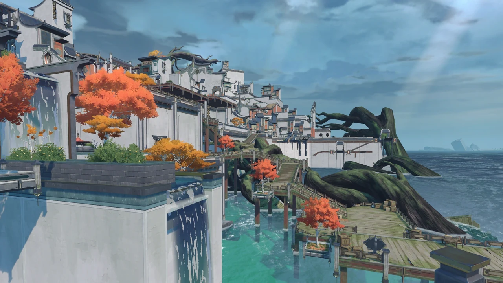
의 추종자들이 단정사에 들어와 연단로를 가동하고, 그 수장이 반물질 군단을 불러들인다. 군단과 약왕의 비전이 같은 자리에 선 것은 의 재앙이 두 갈래에서 왔다는 뜻이다.
길잡이로 계속 함께한 이 사라지고, 그 자리에 가 모습을 드러낸다. 여우족 사절의 모습은 위장이었고, 그녀는 거목을 빼앗아 선주의 파멸을 완성하려 한다.
연단로의 독안개는 장수종에게는 견딜 만하고 단명종에게는 치명적이다. 배에 오른 외부인이 먼저 쓰러지는 이유가 여기에 있다.
「풍요」의 은혜를 받았으니, 여러분은 「파멸」의 축복을 견뎌야겠죠?
「길 잃은 용, 흩어진 옛 꿈」
전생
단정사 · 인연경
일행이 단정사에 도착하고, 그 자리에서 이 와 맞붙는다. 연경은 단항의 과거를 아는 사람이고, 그녀의 검은 오래된 원한을 향해 있다.
비디아다라 신영… 이 과거의 그림자들은 아직도 사라지지 않은 건가?
단항의 전생이 흔들린다. 다섯 사람이 함께 전장에 섰던 시대의 기억과, 그 시대가 끝난 방식이 지금의 원한으로 이어진다. 단항은 그 기억을 받아들이지도 부정하지도 못한다.
전투는 결판나지 않고, 일행은 연경과 블레이드의 관계, 그리고 가 그 원한을 이용하고 있다는 사실을 알게 된다. 재앙의 한가운데에 단항의 과거가 놓인다.
연경의 검은 단항을 겨누지 않는다. 그녀가 원하는 것은 오래된 다섯 사람의 결말이고, 단항은 그 결말의 당사자다.
고해를 가르는 용
인연경 · 고해 · 거목 현근물을 가르는 용의 힘, 버려진 궁성, 그리고 거목을 빼앗은 자와의 결전.
「거두어진 비와 이슬, 평온해진 땅」
작전
인연경
인에서 과 합류해 작전을 세운다. 경원이 거목에 직접 진입해 를 붙잡는 동안, 바다가 원래대로 돌아오면 은 철수해 동천을 다시 봉쇄한다.
응, 알고 있다네. 열차팀 친구들, 내가 누구를 데려왔는데, 분명 보고 싶었을 걸세
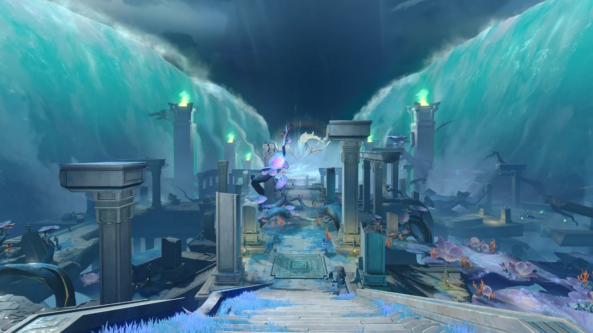
거목 현근으로 가는 길은 고해의 물이 막고 있다. 이 용존의 힘으로 물을 갈라 길을 열고, 일행은 그 사이로 들어간다.
은 판단을 맡고, 와 는 단항의 뒤를 따른다. 각자의 역할이 정해진 것은 이 지점이고, 단항이 자기 힘을 처음으로 온전히 쓰는 자리이기도 하다.
고해의 물을 가르는 일은 비디아다라의 힘 없이는 불가능하다. 단항이 그 힘을 쓴다는 것은 자신의 전생을 인정한다는 뜻이다.
「불멸의 종말, 끝맺은 대겁」
버려진 궁성
고해 · 거목 현근
고해 아래에는 의 옛 궁성이 남아 있다. 시간의 흔적이 느껴지지 않는 벽화와 버려진 전당이 이어지고, 그 중심에 거목 현근이 있다.
우주의 모든 것은 파멸로 끝을 맺지. 「풍요」와 「수렵」도 예외는 아니야……
는 거목의 힘을 쓰며 일행을 맞는다. 그녀가 말하는 파멸은 선주 하나의 문제가 아니라 우주의 모든 것이 끝을 맺는다는 확신이고, 그 확신이 과 군단을 한자리에 묶었다.
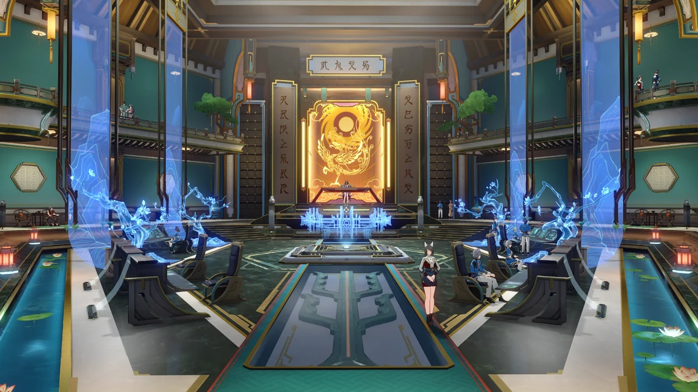
과 의 협공이 팬틸리아의 연결을 끊는다. 그녀는 선주의 파멸이 언젠가 온다며 물러나고, 거목은 다시 봉인된다. 의 재앙은 이렇게 두 번째 막에서 멈춘다.
팬틸리아가 물러난 뒤에도 거목의 뿌리는 남는다. 봉인은 뿌리를 다시 묶는 일이고, 그 작업은 과 공조사가 나눠 맡는다.
후일담 「재앙이 지나간 자리」
별뗏목의 바다 · 장낙천 · 회성항
위령제
별뗏목의 바다 · 장낙천전투가 끝난 자리에 남은 것은 부채 하나와 돌려줄 유품들이다.
「위령제, 맑고 먼 하늘길」
남은 물건
장낙천 · 별뗏목의 바다
전투가 끝난 뒤 의 부탁으로 의 부채를 에게 전한다. 정운이 남긴 유품은 원래 주인들에게 돌아가고, 는 그 물건들을 받아 갈 사람을 찾는다.
자네들이 나부를 떠나기 전에 주고 싶은 게 있네
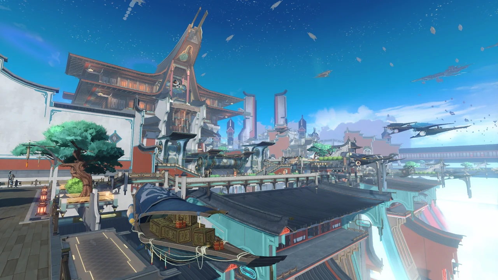
에서 위령제가 열린다. 죽은 이들의 이름을 부르는 의식이고, 이번 재앙에서 죽은 사람들이 그 목록에 오른다. 의 사람들은 이 의식으로 사건을 끝내고 다음 계절을 맞는다.
의식 뒤에 이 일행을 부른다. 그는 나부와 열차의 동맹을 뜻하는 결맹 옥조를 증표로 건네고, 이 배와 열차의 관계를 문서가 아니라 물건으로 남긴다.
위령제에서 이름을 부르는 사람은 천박사다. 항해 중 죽은 사람의 이름을 항로에 남기는 것이 이 의식의 본래 목적이다.
「위령제, 맑고 먼 하늘길」
결맹
장낙천
결맹 옥조는 가 다른 세력과 맺은 동맹을 확인하는 증표다. 열차가 이 배의 문제에 개입한 일은 이 물건 하나로 공식 기록에 남는다.
은 이후의 일도 예상하고 있다. 선주의 재앙은 한 번으로 끝나지 않고, 의 과거도 여기서 정리되지 않았다. 그가 남긴 말은 축하가 아니라 다음을 위한 자리다.
일행은 나부를 떠난다. 열차에 오른 뒤에도 이 배에서 얻은 이름과 빚은 남고, 이후 나부로 돌아오는 일은 다른 형태의 초대로 이어진다.
결맹 옥조는 나부와 열차가 맺은 동맹의 증표다. 이후 열차가 나부에 다시 오는 일은 이 증표를 근거로 한다.
무명객으로서 가야 할 길은 아주 멀고 험할 거야. 열차가 가는 길마다 순조롭길 바라네. 그럼 잘 가시게
개척 후문 「호재지이」
유원 · 금 조각상 거리 · 진요탑 · 기룡단
유원경몽
유원재앙이 지나간 배에 요괴 사건이 남고, 시왕사의 판관이 그 사건을 맡는다.
「유원경몽」
유원의 초대
유원 · 금 조각상 거리
로 돌아온 일행은 유원에서 벌어지는 심령 사건에 휘말린다. 유원은 요괴와 귀신의 이야기가 모이는 정원이고, 사건을 의뢰한 사람은 의 판관 이다.
패밀리님, 안녕하세요! 심령 사건 때문에 절 찾아오신 거 맞죠?
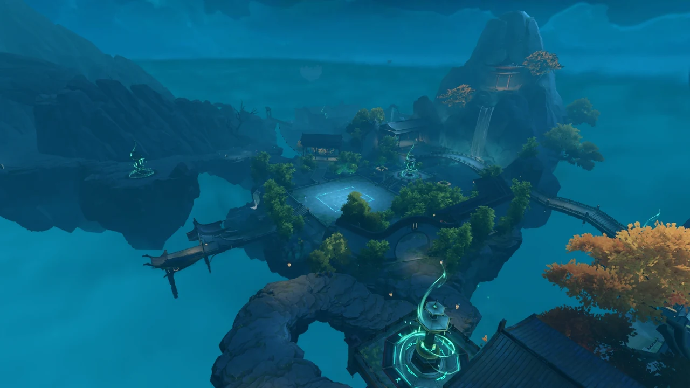
곽향과 함께 움직이는 것은 과 이다. 계네빈은 방송을 하듯 사건을 소개하고, 소상은 검을 들고 따라오지만 자신이 왜 이 일에 끌려왔는지는 계속 의아해한다.
사건의 실마리는 세양이다. 세양은 사람의 마음을 어지럽히는 요괴이고, 유원의 심령 사건 뒤에는 그 요괴를 부리는 누군가가 있다. 판관들은 이 사건을 빌미로 세양의 근원을 조사한다.
유원의 의뢰는 게시판에 글로 붙는다. 사건의 이름과 의뢰인의 요구가 함께 적히고, 그 글을 읽는 사람이 곧 조사자다.
「유원경몽」
세양
유원 · 진요탑
세양에 대한 조사는 에게로 이어진다. 부연은 세양을 부리는 존재이고, 사람의 감정을 먹으며 사건을 키운다. 그에게 인간의 감정은 진수성찬이다.
일행은 유원의 흉가와 진요탑을 오가며 세양을 몰아낸다. 진요탑은 요괴를 가두는 탑이고, 사건의 배후에는 이 탑과 관련된 오래된 규칙이 있다.
사건은 의 판단으로 정리된다. 요괴를 없애는 것으로 끝나지 않고, 누가 왜 그 요괴를 만들었는지가 기록으로 남는다. 유원의 사건은 그렇게 의 공식 기록에 편입된다.
부연의 세양은 사람의 기억을 재료로 쓴다. 그래서 판관들은 요괴를 쫓을 때 자신의 기억이 바뀌지 않았는지를 먼저 확인한다.
아, 죽여주네. 인간의 감정은 진수성찬이야. 히히, 슬픔의 눈물은 맛있는 술맛이 나~
요괴 퇴치팀
금 조각상 거리 · 진요탑이름을 얻은 팀, 규칙이 있는 탑, 그리고 판관의 질문.
「쌍생(雙生)」
나부기담
금 조각상 거리
유원의 사건은 「기담」에 실린다. 신문과 소문의 형태로 퍼진 기록이고, 그 안에서 일행은 요괴 퇴치팀이라는 이름을 얻는다. 이름이 붙으면 의뢰도 붙는다.
패밀리님, 드디어 오셨군요! 당신이 없는 「요괴 퇴치팀」은 이빨 빠진 호랑이나 마찬가지예요!
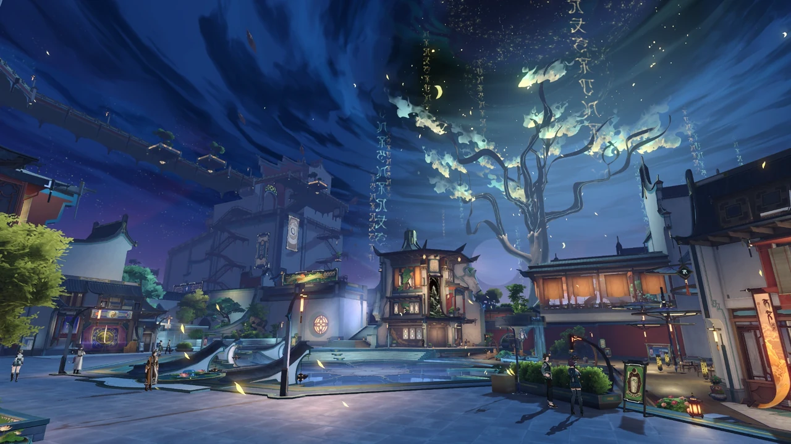
진요탑의 사건은 규칙으로 진행된다. 탑에 갇힌 존재와의 승부는 한 번 이길 때마다 질문 하나에 답하는 방식이고, 그 규칙을 만든 사람은 이다.
부현은 이 규칙을 시험으로 쓴다. 답을 정해 두지 않고 상대가 어떤 선택을 하는지 보는 방식이고, 그 시험의 대상은 요괴만이 아니다.
나부기담은 유원에서 발행되는 기록이다. 사건을 소문의 형태로 남기고, 그 소문이 다음 의뢰를 부른다.
「서조(犀照)」
탑의 규칙
진요탑
탑 안에서 일행은 세양과 그 환영을 상대한다. 상대는 사람의 기억을 재료로 모습을 만들고, 그 기억에 있는 약점을 정확히 찌른다.
이 모래판에는 다른 해결법도 있어요. , 이제 제 아이디어를 말해드릴게요
은 판관으로서 이 사건을 끝내야 한다. 그녀에게 필요한 것은 승리가 아니라 기록이고, 누가 어떤 이유로 요괴를 만들었는지가 남아야 다음 사건을 막을 수 있다.
사건이 끝난 뒤 팀의 이름은 유원에 남는다. 의뢰는 계속 들어오고, 판관과 검객과 방송인과 무명객이 한자리에 서는 일은 이 배에서 흔한 광경이 된다.
진요탑의 규칙은 판관이 정하고 판관이 지킨다. 탑에 갇힌 존재도 그 규칙을 따르며, 규칙을 어기는 쪽은 대개 사람이다.
유원의 나날
유원 · 금 조각상 거리흉가의 의뢰, 격투 클럽의 시범 경기, 그리고 판관이 남긴 질문.
「나부 기문•흉가」
흉가와 격투 클럽
유원 · 금 조각상 거리
유원의 나날은 의뢰의 연속이다. 기담에 실린 도움 요청 글을 따라 흉가를 조사하고, 그 안에서 발견한 세양을 에 넘기는 일이 반복된다.
흉가라… 곽향 님이 준 부적이 효과가 있었으면 좋겠네요……
Dr. 파고파고가 연 격투 클럽의 시범 경기에는 벨로보그의 고대 무술 잔본을 시험하는 자리가 마련된다. 우승 상금과 스콧 비즈니스 연합의 비밀 보상이 걸리고, 관중은 그 조건에 반응한다.
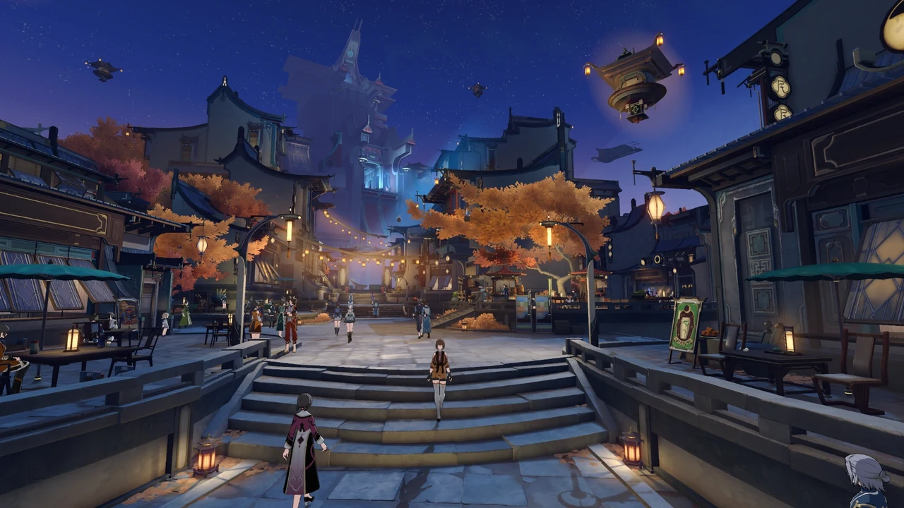
시합의 상대는 규칙을 지키지 않는다. 일행은 상대의 반칙을 규칙으로 되돌려 놓고, 경기는 관중이 이해할 수 있는 형태로 끝난다. 유원의 하루는 이렇게 기록으로 남는다.
격투 클럽의 시범 경기는 관중에게 규칙을 설명하는 시간을 먼저 쓴다. 반칙을 규칙으로 되돌리는 방식이 이 클럽의 흥행 비결이다.
「나부 기문•흉가」
판관의 질문
유원
은 마지막에 한 가지 시험을 남긴다. 모래판 위의 기계를 출구로 인도하라는 과제이고, 그 과정에서 어떤 선택을 하는지가 답이 된다.
「흉가 탐방」의 결론이 그게 「흉가」가 아니었다는 걸로 날 줄은 몰랐어요
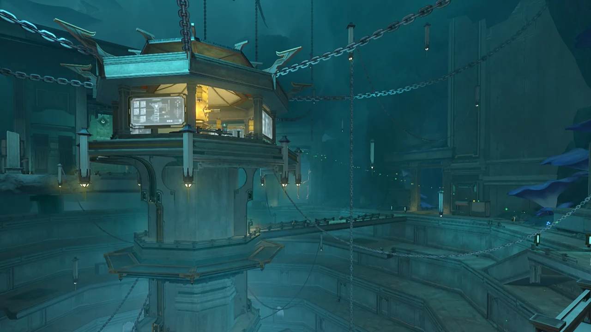
그가 미리 짚어 둔 대로 일행은 「인간은 기계가 아니야」라거나 「세상에 길이 하나만 있진 않아」라고 답한다. 부현은 그 답을 예상했고, 그래서 질문을 바꿔 던진다.
시험이 끝나면 유원의 사건은 마무리된다. 남은 것은 판관의 기록과 팀의 이름, 그리고 를 떠나는 열차의 다음 역이다.
부현의 시험에는 정답이 없다. 그가 보는 것은 결론이 아니라 결론에 이르는 방식이고, 그래서 질문은 마지막까지 바뀐다.